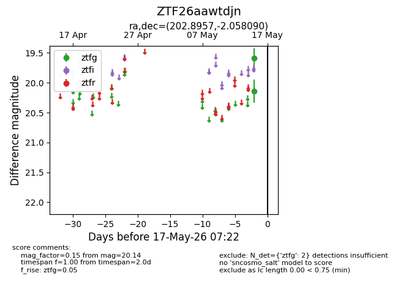
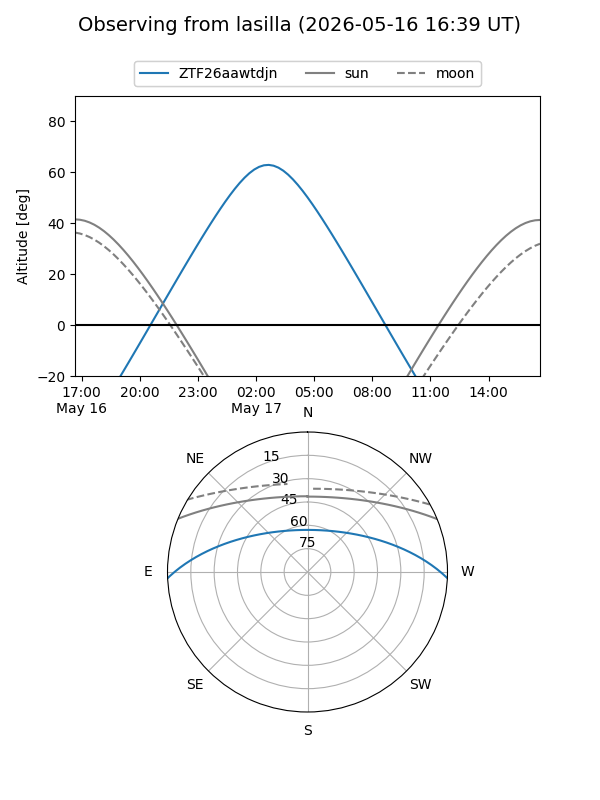
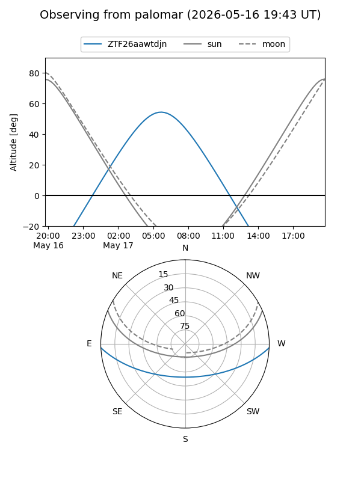

ZTF26aawtdjn
Target ZTF26aawtdjn at 2026-05-17 07:24
Aliases and brokers:
FINK: link
Lasair: link
ALeRCE: link
alt names
ZTF26aawtdjn (ztf,fink_ztf)
Coordinates:
equatorial (ra, dec) = 202.8957,-2.05809
equatorial (HMS+DMS) = 13:31:34.97,-02:03:29.13
galactic (l, b) = (322.8483,+59.25245)
Flags:
Photometry:
last ztfg=20.14
2 ztfg detections
Lightcurve

Visibility


Additional plots